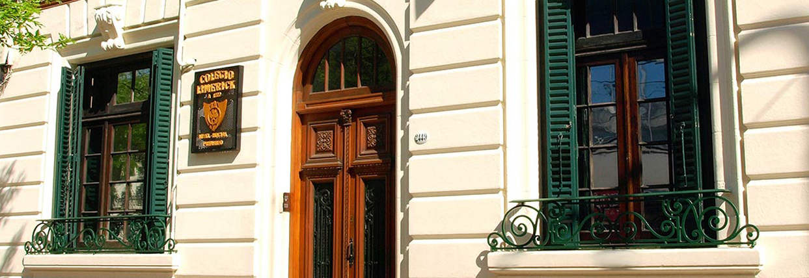

Estudios
Jardín:
- Nombre: Jardín Sarmiento
- Ubicación La escuela no existe más, por lo que no tiene ubicación(o eso creo)
- Período: Sala de 1 y 2 años
- Tipo: Ni idea, te pensas que me acuerdo?
Primaria:

- Nombre: Limerick
- Ubicación
- Período: Sala de 3 años a 6to grado de primaria
- Tipo: Privada, Bilingüe
Secundaria:
- Nombre: Ort Almagro
- Ubicación
- Período: 7to grado de primaria a 5to año de secundaria (esperemos)
- Tipo: Privada, Técnica